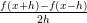
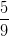
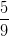

Exercícios
E 7.1.1. Expanda a função suave f(x) em um polinômio de Taylor adequado para obter as seguintes aproximações:
- f′(x) =
 + O(h)
+ O(h)
- f′(x) =
 + O(h)
+ O(h)
- f′(x) =  + O(h2)
- f′′(x) =
 + O(h2)
+ O(h2)
E 7.1.2. Use os esquemas numéricos do exercício 7.1.1 para aproximar as seguintes derivadas:
- f′(x) onde f(x) = sin(x) e x = 2.
- f′(x) onde f(x) = e−x e x = 1.
- f′′(x) onde f(x) = e−x e x = 1.
Use h = 10−2 e h = 10−3 e compare com os valores obtidos através da avaliação numérica das derivadas exatas.
E 7.1.3. Use a expansão da função f(x) em torno de x = 0 em polinômios de Taylor para encontrar os coeficientes a1, a2 e a3 tais que
- f′(0) = a1f(0) + a2f(h) + a3f(2h) + O(h2)
- f′(0) = a1f(0) + a2f(−h) + a3f(−2h) + O(h2)
- f′(0) = a1f(−h1) + a2f(0) + a3f(h2) + O(h2), |h 1|,|h2| = O(h)
- f′′(0) = a1f(0) + a2f(h) + a3f(2h) + O(h)
- f′′(0) = a1f(0) + a2f(−h) + a3f(−2h) + O(h)
Resposta.
- f′(0) =
 + O(h2)
+ O(h2)
- f′(0) =
 + O(h2)
+ O(h2)
- f′(0) =
 l
l
- f′′(0) =
 + O(h)
+ O(h)
- f′′(0) =
 + O(h)
+ O(h)
E 7.1.4. As tensões na entrada, vi, e saída, vo, de um amplificador foram medidas em regime estacionário conforme tabela abaixo.


- Derivada primeira numérica de primeira ordem usando o próprio ponto e o próximo.
- Derivada primeira numérica de primeira ordem usando o próprio ponto e o anterior.
- Derivada primeira numérica de segunda ordem usando o ponto anterior e o próximo.
- Derivada primeira analítica da função do tipo v0 = a1vi + a3vi3 que melhor se ajusta aos pontos pelo critério dos mínimos quadrados.

Resposta.